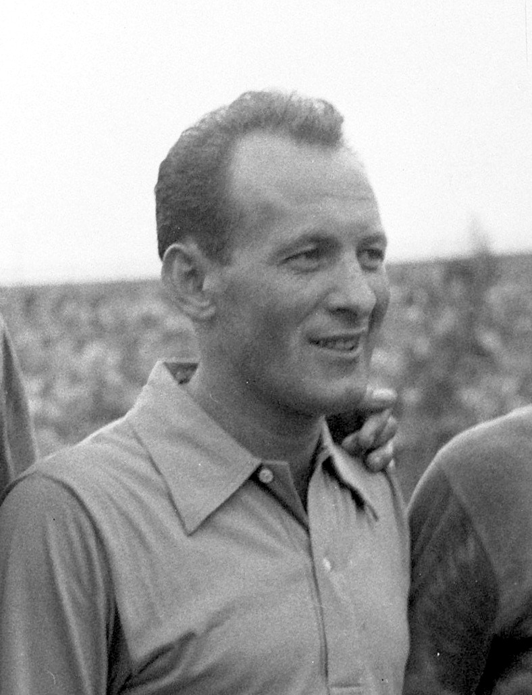
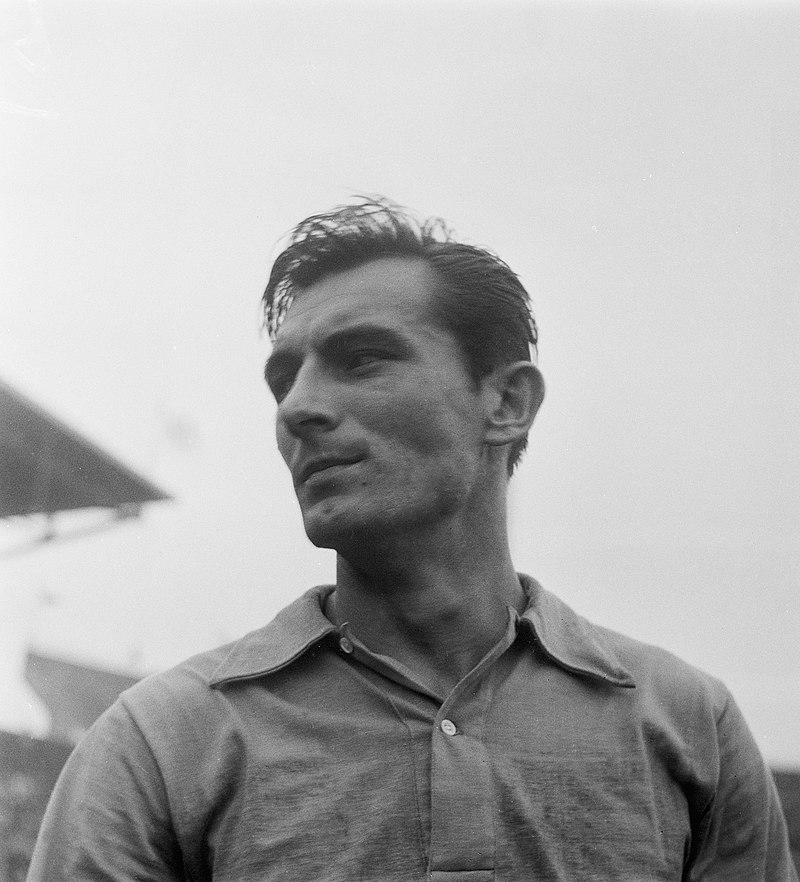
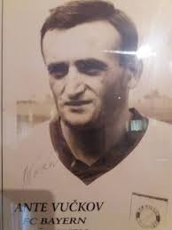
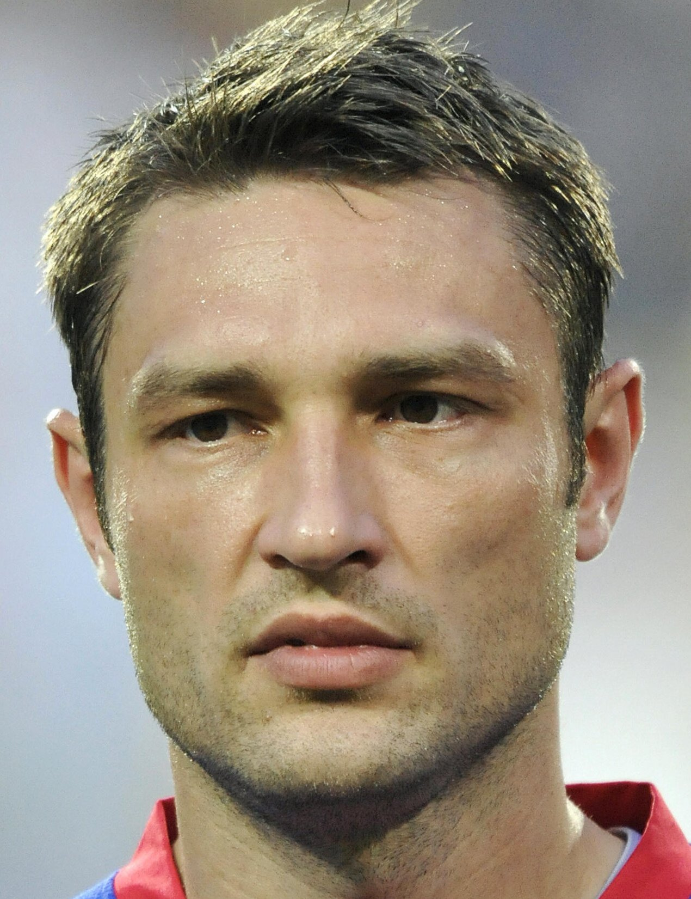
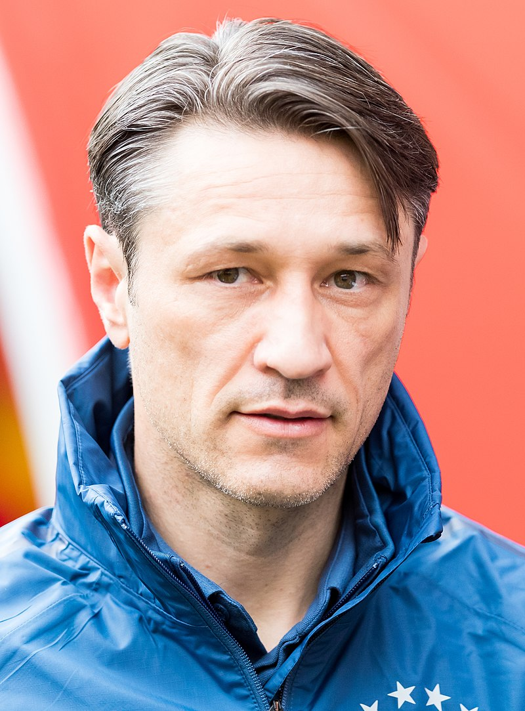
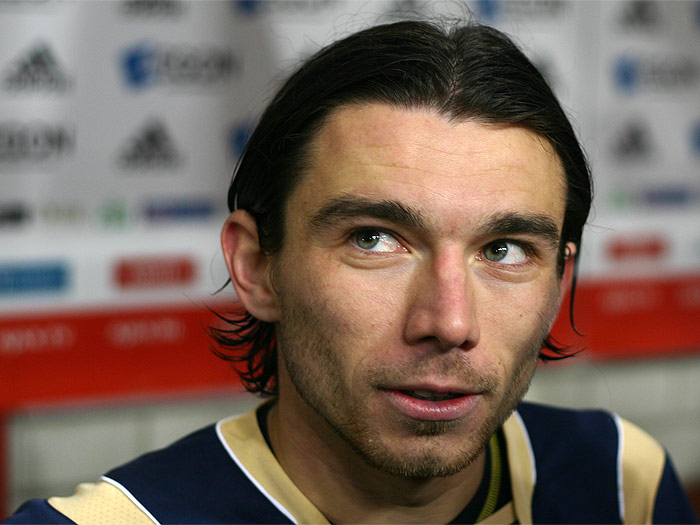
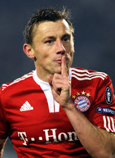
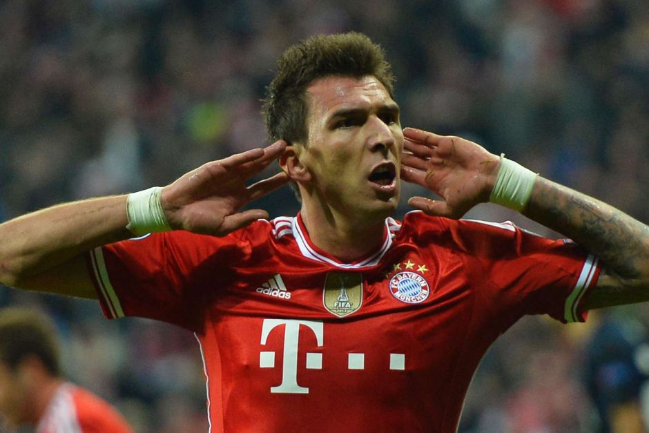
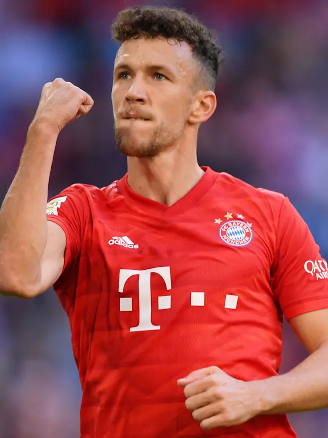

Zlatko Čajkovski (1963. – 1968.)

Croatian and Yugoslavian football player and coach. Normally a defensive midfielder, Čajkovski was renowned for his tremendous physical condition and
marking ability and is considered to be one of the finest Yugoslav footballers. Despite his normally defensive role he was also a fine passer and
possessed top-class technical ability.
In 1963 he took over the reins at FC Bayern Munich, which he guided from the second division into the first division, two wins in the German Cup and the
win in the European Cup Winners Cup final against Rangers FC from Glasgow in 1967. In this period he formed around the goalkeeper Sepp Maier,
Franz Beckenbauer and, the later legendary, striker Gerd Müller, then all in their very early twenties, one of the top teams in Europe and the whole world.
Branko Zebec (1968. - 1970.)

Croatian footballer and manager who played for Yugoslavia. In his heyday, Zebec fascinated the world with his performances at the World Cups in 1954 and
1958. With Partizan he won 3 Yugoslav Cups (1952, 1954, 1957). With Red Star Belgrade he won the national championship in 1960. As coach he led
Hajduk Split, Bayern Munich and Hamburger SV to success. in 1968 he was hired by Bayern Munich to follow in the footstep of his compatriot "Czik" Čajkovski,
himself a former Dinamo player and a teammate of Zebec in the days of the 1952 Olympics and 1954 FIFA World Cup. The team around the young Franz Beckenbauer
and Gerd Müller had won two national cups and the European Cup Winners' Cup. He curbed the offensive style of the team and reinforced the defence.
In his first season, Zebec won with them the German championship, the club's first in 37 years. To boot, the team also won the cup, and thus also achieved
the first double in the history of the German Bundesliga. The next season began with problems. Bayern was ousted in the first round of the European Cup of
Champions at the hands of AS Saint-Etienne. Already early in the season Zebec announced that he would not extend his contract at the end of the year.
As Bayern experienced a spell of three matches with only one point mid-way through the second half of the season and fell back five points behind the leaders
his contract was even terminated prematurely. Udo Lattek was to succeed him. In a later book Beckenbauer reported of "atmospheric disturbances" between the
coach and the team.
Ante Vučkov (1965. – 1967.)

Ante Vučkov was the first ever Croatian to play for Bayern. He joined them during the season 1965/66, and to this day he is a remembered transfer
because at the time he was the most expensive ever player to play in the Bundesliga, even more expensive than Gerd Muller. He was the first foreign player
to play for Bayern in the Bundesliga. Unfortunately, for Bayern he only played 1 full game, he also scored his only goal that game, against Tasmania Berlin. In another
game he played, against Karlsruhe, his leg was broken in a violent foul. He spent two weeks in the hospital and recovered a further 6 months. After that, he was never
the same player, by his own words "After such an injury a fear shows in a player, too much caution, like you can't relax enough while playing. Simply, playing football
isn't it anymore." After two season at Bayern he was released and moved to PEC Zwolle in the Netherlands, but he never played for them or anyone else again.
Robert Kovač (2001. – 2005. as player, 2018. - 2019. as assistant coach)

Croatian professional football manager and former player who played as a centre-back. He was known for his ability with the ball and skill at
dispossessing opponents. After his contract expired at Bayer Leverkusen he went to join reigning champions of 2000–01 season and UEFA Champions League title holders,
Bayern Munich. In four seasons with Bayern he won two Bundesliga titles, two German Cup titles and the 2001 Intercontinental Cup.
In 2018. Robert Kovač the became assistant coach of Bayern Munich to his brother Niko Kovač. He left with his brother on 3 November 2019, by mutual agreement after a 5-1 loss to Eintracht Frankfurt.
In 2018. Robert Kovač the became assistant coach of Bayern Munich to his brother Niko Kovač. He left with his brother on 3 November 2019, by mutual agreement after a 5-1 loss to Eintracht Frankfurt.
Niko Kovač (2001. – 2003. as player, 2018. – 2019. as manager)

In July 2001, Niko Kovač signed for then Bundesliga and UEFA Champions League winners, Bayern Munich. Kovač joined the club along with his brother,
Robert Kovač. However, Kovač did not manage to establish himself as a regular at the club and left Bayern for a second stint with Hertha BSC after
two seasons in the summer of 2003. He appeared in 34 Bundesliga matches and scored three goals for Bayern in the league. He won one bundesliga title,
one DFB pokal and one Intercontinental cup with the club.
On 13 April 2018, Bayern Munich announced that Kovač would succeed Jupp Heynckes as manager of the club for the 2018–19 season, with a three-year contract lasting until 30 June 2021. Kovač's brother, Robert Kovač, would follow him to Munich to be his assistant coach. Kovač had a contract with Frankfurt until 30 June 2018 and Bayern had to pay a release clause in his contract reported to be around €2.2 million. Kovač is just the fourth former player to manage Bayern Munich after Søren Lerby, Franz Beckenbauer and Jürgen Klinsmann. Kovač was the third Croat to manage Bayern Munich after Zlatko Čajkovski and Branko Zebec. Kovač officially took over on 1 July 2018 and was presented as the new manager of Bayern Munich on 2 July 2018. On 12 August 2018, Kovač won his first match as manager of Bayern 5–0 in the German Super Cup against Eintracht Frankfurt. He won his first Bundesliga game in charge as Bayern defeated 1899 Hoffenheim 3–1 at home on 25 August. On 19 May 2019, he led Bayern to their seventh consecutive Bundesliga title after a 5–1 home win against his former club, Eintracht Frankfurt, beating nearest rivals Borussia Dortmund by two points. This was Kovač's first Bundesliga title as a coach. On 25 May 2019, Kovač led Bayern to a league and cup double when Bayern defeated RB Leipzig 3–0 in the 2019 DFB-Pokal Final. It was Kovač's second consecutive cup win as he became the first coach since Felix Magath in 2005 and 2006 to win back-to-back cup titles. Kovač also became the first person to win a league and cup double both as a player and coach in German football. On 3 November 2019, Kovač left by mutual agreement after a 5–1 loss to Eintracht Frankfurt.
On 13 April 2018, Bayern Munich announced that Kovač would succeed Jupp Heynckes as manager of the club for the 2018–19 season, with a three-year contract lasting until 30 June 2021. Kovač's brother, Robert Kovač, would follow him to Munich to be his assistant coach. Kovač had a contract with Frankfurt until 30 June 2018 and Bayern had to pay a release clause in his contract reported to be around €2.2 million. Kovač is just the fourth former player to manage Bayern Munich after Søren Lerby, Franz Beckenbauer and Jürgen Klinsmann. Kovač was the third Croat to manage Bayern Munich after Zlatko Čajkovski and Branko Zebec. Kovač officially took over on 1 July 2018 and was presented as the new manager of Bayern Munich on 2 July 2018. On 12 August 2018, Kovač won his first match as manager of Bayern 5–0 in the German Super Cup against Eintracht Frankfurt. He won his first Bundesliga game in charge as Bayern defeated 1899 Hoffenheim 3–1 at home on 25 August. On 19 May 2019, he led Bayern to their seventh consecutive Bundesliga title after a 5–1 home win against his former club, Eintracht Frankfurt, beating nearest rivals Borussia Dortmund by two points. This was Kovač's first Bundesliga title as a coach. On 25 May 2019, Kovač led Bayern to a league and cup double when Bayern defeated RB Leipzig 3–0 in the 2019 DFB-Pokal Final. It was Kovač's second consecutive cup win as he became the first coach since Felix Magath in 2005 and 2006 to win back-to-back cup titles. Kovač also became the first person to win a league and cup double both as a player and coach in German football. On 3 November 2019, Kovač left by mutual agreement after a 5–1 loss to Eintracht Frankfurt.
Danijel Pranjić (2009. – 2012.)

Croatian professional footballer who plays for Omonia Psevda in the Cypriot Second Division.
Being a versatile left-footed player, he can play all across the left wing and can also be used as a central midfielder.
He won the Dutch Cup with Heerenveen at the end of the 2008–09 season, which turned out to be his last match for the club. In June 2009,
Bayern Munich announced Pranjić would join the club. He struggled to make an impact in his first season with the club, starting only 14 matches and
losing out to first choice left-back Holger Badstuber.
Due to his utility and injuries to other teammates, however, he started an increasing number of games in his second season with the Bavarian club.
On 13 July 2012, after the expiration of his Bayern contract, Pranjić was announced as a new signing for Portuguese Primeira Liga team Sporting Clube de Portugal.
During his time at Bayern Munich, he won one Bundesliga title, DFB pokal, DFL-supercup and was a runner up twice in the champions league.
Ivica Olić (2009. – 2012.)

Croatian former professional footballer who is currently working as an assistant manager of the Croatia national team.
On 3 January 2009, Olić signed a three-year contract with Bundesliga rivals Bayern Munich. He joined the club on a free transfer on 1 July 2009.
Initially, he was supposed to be back-up to the likes of Miroslav Klose and Mario Gómez, but due to injury and fitness issues, he began to be preferred
as the club's first choice. On 8 August, his Bayern debut, he scored the opening goal against 1899 Hoffenheim in a 1–1 draw and soon became a favourite
with the Bayern fans. He reached new heights upon scoring a crucial goal in the 2010 Champions League quarter-final (first leg) against Manchester United
in injury time, to give Bayern a slender 2–1 lead. He also scored the first goal in the second leg for his team, but they trailed 3–1. The game
ended 3–2. Bayern, however, won on away goals. He scored his first hat-trick for the Bavarians against Lyon, scoring with his left foot, right foot,
and his head, in the Champions League semi-final second leg on 27 April 2010. The victory against Lyon secured his team a place in the final against
Internazionale, which they eventually lost 2–0. On 3 April 2012, he scored a brace in a 2–0 win against Marseille in the 2011–12 UEFA Champions League
quarter-finals. Olić played his final game for Bayern in the 2012 UEFA Champions League Final against Chelsea, in which he came on as a 97th-minute
substitute for the injured Franck Ribéry. Bayern eventually lost the game in a penalty shootout when the game ended 1–1 after extra time. Olić missed
the team's fourth penalty, as they lost the shootout 4–3. During his time at Bayern Munich, he won one Bundesliga title, DFB pokal, DFL-supercup and
was a runner up twice in the champions league. After Bayern he moved to another bundesliga team VFL Wolfsburg.
Mario Mandžukić (2012. – 2014.)

Croatian professional footballer who plays as a forward for Serie A club A.C. Milan. Besides being a prolific goalscorer, he is known for his
defensive contribution and aerial power
On 26 June, Mandžukić signed a contract with Bundesliga club Bayern Munich for a transfer fee of €13 million, pending a medical test, subsequent
to his strong performance at UEFA Euro 2012 in Ukraine and Poland, and because of his terrific form for Wolfsburg in the Bundesliga. On 27 June, the
transfer was officially announced by Bayern Munich.
He finished his first Bundesliga season with Bayern as the club's top goalscorer, netting a total of 15 goals in 24 matches and having a major impact in winning the Bundesliga title. He scored his first Champions League goal of the season in the Round of 16 match against Arsenal. He netted another one in the quarter-final match against Juventus in Turin, giving Bayern the 0–1 away lead. On 25 May, Bayern faced Borussia Dortmund in the 2013 UEFA Champions League Final and Mandžukić scored the first goal of the match, giving Bayern a 1–0 lead in 60th minute. Bayern went on to win the match 2–1 after a late goal from Arjen Robben. With this goal, Mandžukić became the first Croat to score in a Champions League final game and it capped a highly successful first season for him in Munich, as the club completed a treble-winning season, claiming the Bundesliga, Champions League, and DFB-Pokal, as well as the German Supercup at the start of the campaign.
His second season began slowly, having small issues adjusting to new Bayern coach Pep Guardiola's system. Guardiola changed Bayern's formation from the 4–2–3–1 they had used previously under Jupp Heynckes to a new 4–1–4–1 style. While it took a bit of time to adjust, Mandžukić regained his form nonetheless in time for league play. He opened the new season in the Bundesliga by scoring two goals in two league appearances. He eventually won the FIFA Club World Cup with Bayern after the final with Raja Casablanca, ended with a 2–0 victory. Mandžukić was dropped from the team by Guardiola ahead of the 2014 DFB-Pokal Final which Bayern won. They also won the Bundesliga title. Mandžukić stated that he wanted to leave Bayern because "the playing style of coach Pep Guardiola simply does not fit" him. He left that summer to Atletico Madrid.
He finished his first Bundesliga season with Bayern as the club's top goalscorer, netting a total of 15 goals in 24 matches and having a major impact in winning the Bundesliga title. He scored his first Champions League goal of the season in the Round of 16 match against Arsenal. He netted another one in the quarter-final match against Juventus in Turin, giving Bayern the 0–1 away lead. On 25 May, Bayern faced Borussia Dortmund in the 2013 UEFA Champions League Final and Mandžukić scored the first goal of the match, giving Bayern a 1–0 lead in 60th minute. Bayern went on to win the match 2–1 after a late goal from Arjen Robben. With this goal, Mandžukić became the first Croat to score in a Champions League final game and it capped a highly successful first season for him in Munich, as the club completed a treble-winning season, claiming the Bundesliga, Champions League, and DFB-Pokal, as well as the German Supercup at the start of the campaign.
His second season began slowly, having small issues adjusting to new Bayern coach Pep Guardiola's system. Guardiola changed Bayern's formation from the 4–2–3–1 they had used previously under Jupp Heynckes to a new 4–1–4–1 style. While it took a bit of time to adjust, Mandžukić regained his form nonetheless in time for league play. He opened the new season in the Bundesliga by scoring two goals in two league appearances. He eventually won the FIFA Club World Cup with Bayern after the final with Raja Casablanca, ended with a 2–0 victory. Mandžukić was dropped from the team by Guardiola ahead of the 2014 DFB-Pokal Final which Bayern won. They also won the Bundesliga title. Mandžukić stated that he wanted to leave Bayern because "the playing style of coach Pep Guardiola simply does not fit" him. He left that summer to Atletico Madrid.
Ivan Perišić (2019. – 2020.)

Croatian professional footballer who plays for Serie A club Inter Milan, and the Croatia national team. He usually plays as a winger,
but can also be deployed as an attacking midfielder or second striker.
On 13 August 2019, Perišić joined German club Bayern Munich on a season-long loan. Bayern had the option of signing Perišić on a permanent deal in the
summer of 2020. On 31 August he scored his first goal for Bayern and provided an assist in a 6–1 victory over Mainz.
On 4 February 2020, during training ahead of a DFB-Pokal match against 1899 Hoffenheim, Perišić suffered a right ankle fracture following a tackle
from teammate Álvaro Odriozola. He underwent a surgery the same day. He came back to the team on 17 May, coming on for Serge Gnabry in 85th minute of
the game against Union Berlin, the club's first game after the league suspension due to the COVID-19 pandemic.
On 10 June, he scored the opening goal in a 2–1 victory over Eintracht Frankfurt in the DFB-Pokal semi-final. On 4 July, he provided Robert Lewandowski
with an assist in the DFB-Pokal Final as Bayern defeated Bayer Leverkusen 4–2 and secured the domestic double.
On 8 August, he scored in a Champions League round of 16 second leg, as Bayern defeated Chelsea 4–1 (7–1 on aggregate). Six days later,
he scored in a quarter-final 8–2 win over Barcelona at Estádio da Luz. On 23 August, he became the eleventh Croatian to win the Champions League in
history, as Bayern defeated Paris Saint-Germain 1–0 in the final. He also won the Bundesliga and the DFB Pokal winning the very popular international treble.
On 9 September, Bayern announced they had opted not to sign Perišić on permanent deal, after failing to negotiate a deal with Inter and he returned
to his parent club.